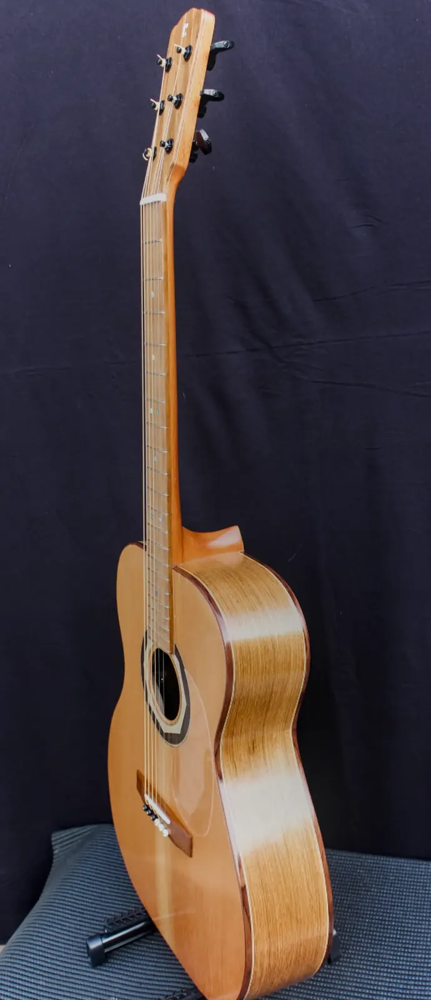

Uirapuru Violão OM (Aço, 6 cordas)

Madeiras
- Tampo
- Cedro Rosa
- Fundo e laterais
- Louro
- Braço
- Cedro
- Escala
- Pau Ferro
- Cavalete
- Pau Ferro
Componentes
- Tarraxas
- Especiais
- Filetes / marchetaria
- Marchetaria em madeiras nobres
- Acabamento
- Goma Laca Indiana - French Polish
- Trastes, nut e rastilho
- Nut e Rastilho em osso, marcações em madre pérola, tensor natural em Ipê, headstock personalizado Baratieri, roseta/mosaico em marchetaria artesanal com madeiras nobres
- Captação
- Fishman, roldana/jack blindado
- Preço
- R$ 7.000,00
- Identificação
- BL-26-VA-001
Uirapuru é um violão estilo OM, de cordas de aço, construído para músicos que buscam projeção, equilíbrio e uma voz própria — assim como a ave lendária que empresta seu nome ao instrumento. O tampo em cedro rosa confere brilho e resposta rápida, enquanto fundo e laterais em louro trazem corpo e sustentação às notas graves. O braço em cedro, com tensor natural em ipê e encontro da caixa na 14ª casa, garante estabilidade e conforto em toda a extensão do braço. A roseta em marchetaria artesanal com madeiras nobres e os filetes no mesmo padrão reforçam a identidade visual da linha, enquanto as marcações em madre pérola e o headstock personalizado com a marca Baratieri assinam um instrumento de exceção. O acabamento em goma laca indiana com técnica de french polish realça o brilho natural das madeiras, e a captação Fishman com roldana e jack blindados garante amplificação limpa e confiável em qualquer palco. Uma peça feita à mão pelo luthier Jacir Paulo Baratieri.